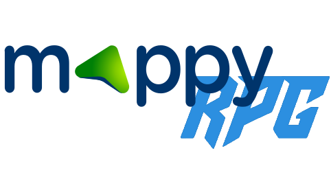

3 SAÉ EN 1 !
Duree de vie d'un RPG

Terminé
Langue :

Début du projet :
17/03/2023
Fin du projet :
08/06/2023
Langage
S Java
Equipe
Matthieu FARANDJIS
Alexis LEMOUTON
Plus sur le projet
Présentation

3 SAÉ en 1 !
Ce grand projet est un peu spécial en effet, il s'étend sur 3 SAÉ, soit 3 grandes étapes.
Nous devons mettre à l'épreuve nos connaissances en termes de gestion de projet...
... Afin de construire le projet Java efficacement, tout en prenant compte nos cours de qualité de développement...
Projet qui en plus, aura sa propre interface graphique avec JavaFX !
Nous devons créer un calculateur d'itinéraire pour un jeu RPG fictif.
Ce jeu est composé de plusieurs scénarios avec différentes quêtes.
Certaines quêtes ont des préconditions, cela signifie que nous devons faire des quêtes précises au préalable.
Chaque quête rapporte au joueur de l'expérience afin de pouvoir faire la quête finale.
Avec notre programme appelé "MappyRPG", l'utilisateur est capable de trouver l'itinéraire de son choix.
S'il veut les meilleurs ou pires trajets, en termes de distance, durée, ou de nombre de quêtes... C'est possible !
L'utilisateur peut même restreindre la recherche en précisant par exemple la distance ou durée minimale/maximale.
L'objectif étant de déterminer la durée de vie du jeu, en fonction du type de joueur.
I - Gestion d'un projet (GPO)
Avec nos cours de Gestion de Projet, nous avons dû découper notre projet en tâche.
Ces tâches ont été mises dans un WBS avec leur description.
Puis nous avons pu créer un planning.
Même si durant le développement, nous avons fait des choix différents que ceux initialement prévus, nous n'étions plus perdus.
Nous savions dans les grandes lignes qu'est ce qu'il fallait faire, et où on en était.
Malheureusement, en voulant répartir les tâches équitablement, nous avons pris beaucoup de retard.
Nous avons réussi à en récupérer, mais nous n'avons pas pu terminer la documentation (JavaDoc), les tests et le rapport.
Nous n'avons pas pu rester de manière complète l'application. La recherche de quête à chaque instant ne fonctionne pas correctement, par exemple.
C'est avec ces problèmes que nous apprenons à faire mieux les prochaines fois.
Le rapport est toutefois plus complet que la présentation de l'application sur cette page.
II - Algorithmie
La recherche gloutonne (niveau 1 du sujet) était très facile.
Nous avions juste besoin d'une méthode calculant la distance entre 2 quêtes, une autre qui indique si la quête est faisable, et une dernière trouvant la quête la plus proche.
Avec une boucle while, nous indiquions quand l'itinéraire était prêt afin de le renvoyer à l'utilisateur.
Les niveaux suivants étaient complexes.
Avec cette idée de chemin critique en GPO, nous avons réussi à reproduire ce concept avec les quêtes.
Pour chaque scénario, nous avions des listes de quêtes ordonnées à faire absolument pour pouvoir faire la quête finale (sans prendre en compte l'expérience).
Notre première approche était d'insérer des quêtes sur ces chemins afin de satisfaire l'utilisateur.
Mais nous nous étions rendu compte que les résultats étaient peu concluants.
Alors nous avons créé un algorithme récursif qui cherchait toutes les possibilités.
Si l'algorithme récursif trouvait relativement rapidement les itinéraires, ce n'était pas le cas pour les deux derniers scénarios.
Dans le cas de la recherche des pires itinéraires exhaustifs, nous avons créé 2 petits algorithmes.
Un algorithme glouton qui cherche les pires quêtes sur le ratio expérience/critère (par exemple, critère en termes de distance), et un autre reprenant notre idée initiale.
Les résultats proposés ne sont pas forcément les pires possibles pour les plus grands scénarios.
III - L'interface graphique
Alexis étant fort dans la conception d'interfaces graphique avec JavaFX, il s'est principalement occupé de cette partie.
Bien que nous avons voulu répartir les tâches équitablement, nous avons préféré privilégier nos points forts au risque de se retrouver trop souvent en difficulté.
Lorsque le joueur remplit le formulaire puis le valide, un objet "ChoixUtilisateur" est créé.
Cet objet permet à l'algorithme de s'adapter. S'il doit s'arrêter à un nombre précis de quêtes durant sa recherche par exemple.
L'algorithme se lance et l'interface récupère les résultats pour l'afficher.
Grâce au tableau, l'utilisateur est capable de trier les itinéraires trouvés par leur caractéristique.
L'utilisateur peut donc trouver le pire itinéraire en termes de temps sur les 10 meilleurs itinéraires sur le critère de distance, par exemple.
Lancer le projet
Le projet a été créé sur IntelliJ de Jetbrains. C'est un logiciel payant, mais qui propose une version d'essai de 30 jours.
https://www.jetbrains.com/fr-fr/idea/
Sur IntelliJ :
- Ouvrez le projet "MappyRPG" (l'icone du répertoire est différente des autres).
- Build (tout en haut) > Build Project
- Run (tout en haut) > Run vue.Main
Sur l'application MappyRPG :
- Dans Scénario, sélectionner un scénario
- Dans Solution, sélectionner un type de solution
- Choisissez un ou plusieurs critères (ou "Quête la plus proche" tout seul)
- Optionnel : Indiquer des valeurs minimales/maximales.
- Afficher la solution
N'hésitez pas à consulter le sujet pour mieux comprendre les termes "efficace", "exhaustif" et "quête la plus proche".
Le rapport comporte plus d'information que cette page.
Le dossier de test n'est pas disponible en téléchargement.
Si vous avez des questions ou si vous avez besoin d'aide, vous pouvez me contacter par email (voir tout en bas de la page).
MappyRPG fait référence à la plateforme en ligne "Mappy" de RATP Smart Systems.